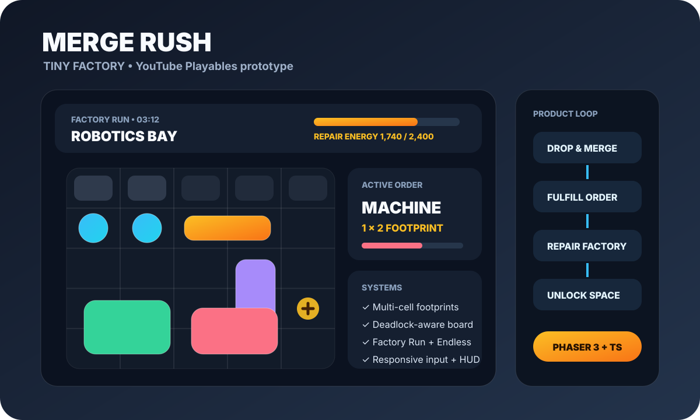
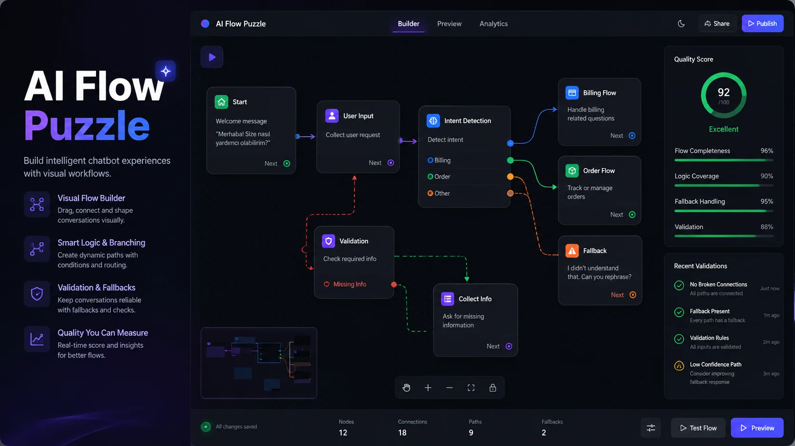
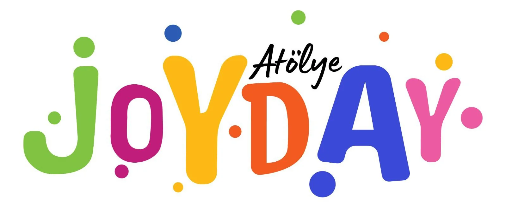
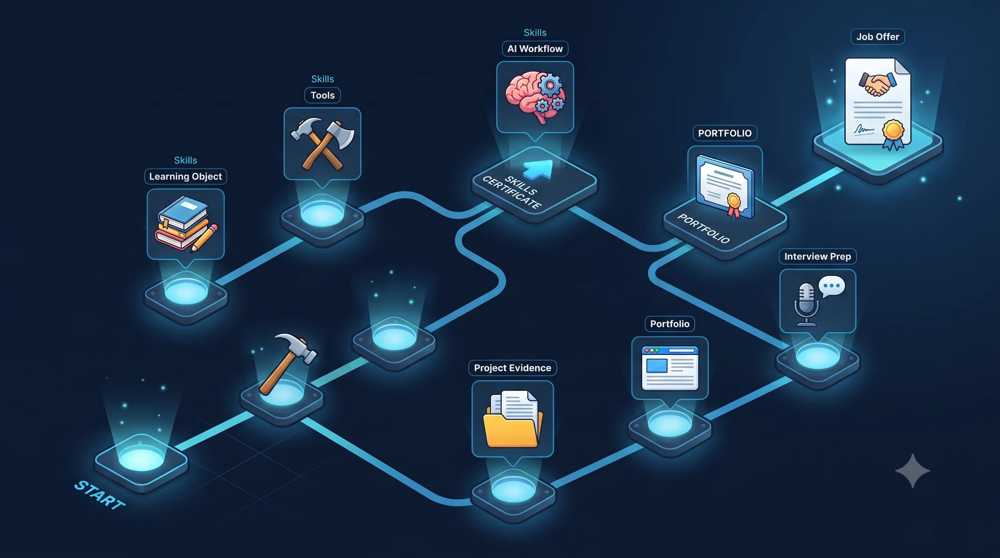

Active DevelopmentPhaser 3 • TypeScript
Merge Rush: Tiny Factory
Timed orders, factory restoration, multi-cell board logic, responsive layouts and platform-aware architecture.
View Case Study Kaan BalcıOpen for work
Kaan BalcıOpen for workGames & Interactive
Merge Rush is the current game-development priority. Smaller browser experiments remain playable, while technical experiments that are not really games now live under Kaan Labs.
Game catalog

Timed orders, factory restoration, multi-cell board logic, responsive layouts and platform-aware architecture.
View Case Study
Build n8n-inspired chatbot workflows by placing trigger, intent, response, fallback and automation nodes.

Create downloadable action-painting artwork with multiple canvas shapes and virtual tools.
Play
Combine learning, tools, AI workflow experience and portfolio proof until the Job Offer object appears.
PlayCurrent direction
The old Interview Run concept is no longer presented as active portfolio work. Future small experiments belong in Labs until they earn a place in the game catalog.